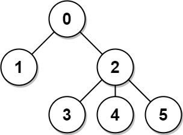
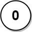
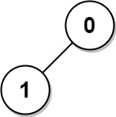

834. 树中距离之和
换根 DP：先一遍 DFS 自底向上算出每结点的子树大小和子树内距离和，再一遍 DFS 自顶向下换根，每个孩子 O(1) 推出新答案。
思路
- 第一次 DFS（后序）：
sz[u]是子树大小；down[u] += down[v] + sz[v]——v 子树里每个点到 u 都比到 v 远一步。 - 以 0 为根时
ans[0] = down[0]，其余结点一开始还没有答案。 - 第二次 DFS（前序）换根：
ans[v] = ans[u] - sz[v] + (n - sz[v])——离开 v 子树的n - sz[v]个点各远一步，子树里sz[v]个点各近一步。 - 无向树用邻接表 + 记父结点防回头。
图解
最优解
1import java.util.*;2 3class Solution {4 private List<Integer>[] g;5 private int[] sz, down, ans;6 private int n;7 8 public int[] sumOfDistancesInTree(int n, int[][] edges) {9 this.n = n;10 g = new List[n];11 for (int i = 0; i < n; i++) g[i] = new ArrayList<>();12 for (int[] e : edges) {13 g[e[0]].add(e[1]);14 g[e[1]].add(e[0]);15 }16 sz = new int[n]; // 子树大小17 down = new int[n]; // 子树内各点到 u 的距离和18 ans = new int[n];19 dfs1(0, -1);20 ans[0] = down[0]; // 以 0 为根，答案就是子树距离和21 dfs2(0, -1);22 return ans;23 }24 25 private void dfs1(int u, int fa) {26 sz[u] = 1;27 for (int v : g[u]) {28 if (v == fa) continue;29 dfs1(v, u);30 sz[u] += sz[v];31 down[u] += down[v] + sz[v]; // v 子树整体离 u 比离 v 远一步32 }33 }34 35 private void dfs2(int u, int fa) {36 for (int v : g[u]) {37 if (v == fa) continue;38 ans[v] = ans[u] - sz[v] + (n - sz[v]); // 换根到 v：子树内各近一步，其余各远一步39 dfs2(v, u);40 }41 }42}题目
给定一个无向、连通的树。树中有 n 个标记为 0...n-1 的节点以及 n-1 条边 。
给定整数 n 和数组 edges ， edges[i] = [ai, bi]表示树中的节点 ai 和 bi 之间有一条边。
返回长度为 n 的数组 answer ，其中 answer[i] 是树中第 i 个节点与所有其他节点之间的距离之和。
示例 1:

输入: n = 6, edges = [[0,1],[0,2],[2,3],[2,4],[2,5]] 输出: [8,12,6,10,10,10] 解释: 树如图所示。 我们可以计算出 dist(0,1) + dist(0,2) + dist(0,3) + dist(0,4) + dist(0,5) 也就是 1 + 1 + 2 + 2 + 2 = 8。 因此，answer[0] = 8，以此类推。
示例 2:

输入: n = 1, edges = [] 输出: [0]
示例 3:

输入: n = 2, edges = [[1,0]] 输出: [1,1]
提示:
1 <= n <= 3 * 104edges.length == n - 1edges[i].length == 20 <= ai, bi < nai != bi- 给定的输入保证为有效的树
题面取自力扣当前版本。
数据快照 2026-11-04。题面版权归力扣所有，本站点仅供本人学习使用，请勿对外发布。